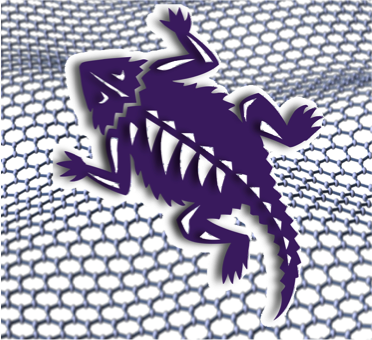
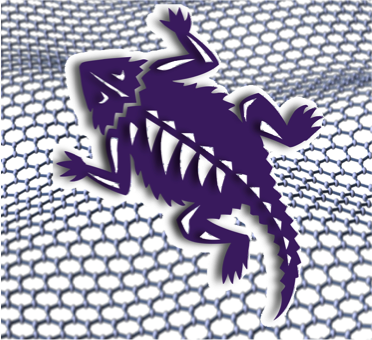

|  |
TCU Department of Physics and Astronomy Laboratory of Bio-Nanotechnology |
|  |
TCU Department of Physics and Astronomy Laboratory of Bio-Nanotechnology |
Naumov’s group research is focused on the optical properties of nanomaterials and their applications in microelectronics, biotechnology, and medicine. In 2015-2016 the work was based on exploring and altering optical properties of graphene oxide. We developed routes to produce graphene oxide with controlled optical properties from non-emissive RGO and also introduced new technique altering emission of GO by oxidation. Naumov’s lab pioneers in adjusting optical properties of GO since discovering its pH-dependent fluorescence in 2010 and further finding methods to control it. Recent endeavors are to control optical properties of graphene oxide by the electric field. This work is at the forefront of modern technology as it provides novel mechanisms to adjust optoelectronic properties in graphene oxide-based devices.
Our lab has developed graphene quantum dots produced via a facile simple eco-friendly hydrothermal synthesis from a single glucosamine precursor. These nanomaterials have served as a basis of optoelectronic devices exhibiting both fluorescence and electroluminescence in the visible and acting as bright LEDs. Additionally the novel low-cost solar cells have been developed from those quantum dots with substantial power conversion efficiency. Further applications included UV photodetectors with excellent responsivity and detectability of all 3 UV regions (A, B and C) distinguishing those well from room light. These devices appear cost effective, novel and showing advantageous parameters within their class.
Among many nanotechnology research groups working with carbon or graphene quantum dots, Naumov’s laboratory is the first to produce fully biocompatible graphene quantum dot structures that fluoresce in the near-infrared. This technology is a substantial advancement for nanomedicine: unlike many other nanomaterials these quantum dots are biocompatible at high concentrations, are inexpensive and simple in preparation, their near-infrared fluorescence penetrates deeper into biological tissue than visible fluorescence of regular fluorophores and they can be doped and chemically altered to add drugs and sensing moieties. The recent step of proving these nanomaterials for in vivo imaging in live mice is critical for their further use in biotechnology. It directly proves their use for drug circulation tracking in whole live animals. Because of that, these graphene quantum dots may become the most perspective out of carbon nanomaterials for biotech development. Development of optical sensing techniques by in the lab is based on carbon nanomaterials. Cancer detection enabled through change in emission spectra of graphene oxide and quantum dots is useful for intraoperative detection of cancer tumor boundaries and skin cancer detection. This approach is non-invasive as a benefit for patients.
One common advantage of nano/bio techniques developed in the lab is their multifunctionality. The lab’s research is always focused on bringing in multiple approaches together to provide better alternatives for medical treatment and diagnostics. These include development of small molecule and gene complimentary treatment for steatohepatitis, imaging and cancer detection by graphene oxide and quantum dots, magnetic targeting, chemotherapy treatment and dual fluorescence/MRI imaging by iron oxide/graphene oxide nanoparticles. Combining multiple functions in one model will aids in treatment and diagnostics. This trend well-explored in our works is at the frontier of nanomedicine.